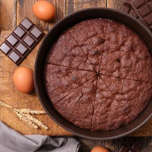

Gâteau au chocolat
Un gâteau gourmand, encore plus avec de la chantilly maison !
| Gâteaux | Difficulté | Coût |
|---|---|---|
| Gâteau au chocolat | Moyen | €€ |
| Cookies | Facile | € |
| Crêpes | Facile | € |
| Pancakes | Facile | €€ |
| Muffins | Facile | € |
| Brioche | Difficile | €€ |
| Tiramisu | Difficile | €€€ |
| Meringues | Moyen | € |
| Gâteau roulé | Facile | € |
| Ingrédients |
|---|
| 200g de chocolat |
| 2 oeufs |
| 100g de sucre |
| 120g de farine |
| 80g de beurre |
Préparation :

| Ingrédients |
|---|
| 90g de beurre |
| 80g de sucre |
| 1 oeuf |
| 160g de farine |
| 2g de levure |
| Pépites de chocolat |
Préparation :
| Ingrédients |
|---|
| 125g de farine |
| 2 oeufs |
| 300ml de lait |
| 0,5 pincée de sel |
| 1 cuillière à soupe de sucre |
| 25g de beurre fondu |
Préparation :
| Ingrédients |
|---|
| 250g de farine |
| 30g de sucre |
| 1 sachet de levure |
| 65g de beurre |
| 1 pincée de sel |
| 300ml de lait |
| 2 oeufs |
Préparation :

| Ingrédients |
|---|
| 150g de farine |
| 75g de sucre |
| 0,5 sachet de levure |
| 50g de beurre |
| 1 pincée de sel |
| 4 cuillières à soupe de lait |
| 1 oeuf |
| Chocolat pour les pépites |
Préparation :

| Ingrédients |
|---|
| 100ml de lait |
| 1 oeuf |
| 80g de sucre |
| 250g de farine |
| 0,5 cuillière à café de sel |
| 10g de levure fraîche |
| 40g de beurre |
| 1 oeuf pour dorer |
Préparation :

| Ingrédients |
|---|
| 500g de mascarpone |
| 4 oeufs |
| 200ml de lait |
| 5 cuillières à soupe de sucre |
| Biscuits cuiller |
| 8 carrés de chocolat au lait |
| Cacao en poudre |
Préparation de la mousse :
Préparation de la sauce au chocolat :
Le dressage :
| Ingrédients |
|---|
| 125g de sucre |
| 2 blancs d'oeufs |
Préparation :

| Ingrédients |
|---|
| 125g de sucre |
| 125g de farine |
| 1cc de levure |
| 2 sachets de sucre vanillé |
| 15g de beurre |
| 4 oeufs |
Préparation :